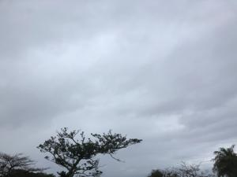

うるがいの話 ある日
最新: 試用期間(６カ月)【うるがいの話 ある日】とは 一日だけのプログです
『うるがいの話』の最新一日だけのプログで、通信料が少なく経済的だ。カニの画像をクリックすると全ての日付が載る『うるがいの話』サイトを表示します
|
|
【うるがいの話】 うるがい(ｳﾙｶﾞｲ urugai)とは、『もずくがに』の名前でとても大きくなります。 |
|---|---|
|
|
【カミマヤーの話】 猫のことを方言でマヤーといいます。カミマヤー（kamimayaa）とは、神の猫のことです。 |
|
【たながぁの音楽】 たながぁ（ﾀﾅｶﾞｰ tanagaa）とは手長えびのことで、何種類かあり大きいのは車 エビぐらいになります。 |

|
【ぶながぁの話】 ぶながぁ(ﾌﾞﾅｶﾞｰ bunagaa)とは、赤い髪の毛、赤い身体、そして身長は１ｍ２０ｃｍ ぐらい、川の蟹を食べているの目撃された。場所は沖縄県国頭郡大宜味村のと ある村僕の隣近所に住んでいる爺さんから、聞いた話です。 |
|
|
【ギーマの話】 ギーマ(giima)とは、山原の里山に咲くスズランに似た、 花を付けます。実は食べられます、 気が付くと口の周りが紫になっています。 |
2023年02月28日 (火）試用期間(６カ月)
14:48


先日、子供が試用期間が終わると今の職場を辞めるかもと話した。いま、毎月
６万から８万程、子供に支援している。手取り、１４万では生活出来ないし正
社員になって給料が２０万になっても、残業手当もない仕事で・・、ズバリ給
料は将来上がりますかと尋ねたら、上がらないと言われたと。この前の会社は
チャンと自活していた（残業見込み６０時間だが）。暇だから、会社のウェブ
サイトにある求人情報と子供の話は反映すると
勤務時間
９：００～１８：００（休憩あり） ←ここは徹底しているらしい
給与
月給 ２００，０００円〜
試用期間中（６カ月）１７万、正社員登用後２０万になります
※基本給＋業務手当（２３ｈ見込み残業代含む）
←子供の話だと業務手当は見込めない
モデル年収
年収３１０万円 経験２年／事務（入社２年目）
←子供の話だとそんなことはない！（ウソ？）
賞与 年２回 ←数万程度らしい
昇給 年２回 ←あてにならない
休日・休暇
■完全週休２日制（毎週日曜日＋シフト休）
←土曜日でない、祝日は休みでない
飲み会が、多いらしい（今時と思うが）、お金ないのでキツイと。ん、自活で
きないなら辞めたらと同意する。
１４時４２分 ビットコインの総資産 ￥９、２３３（↓３）